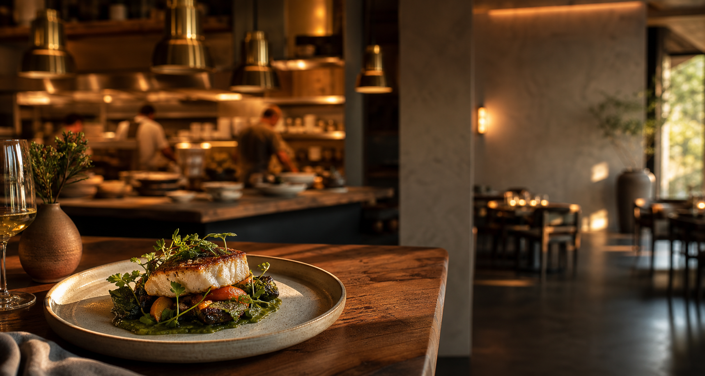
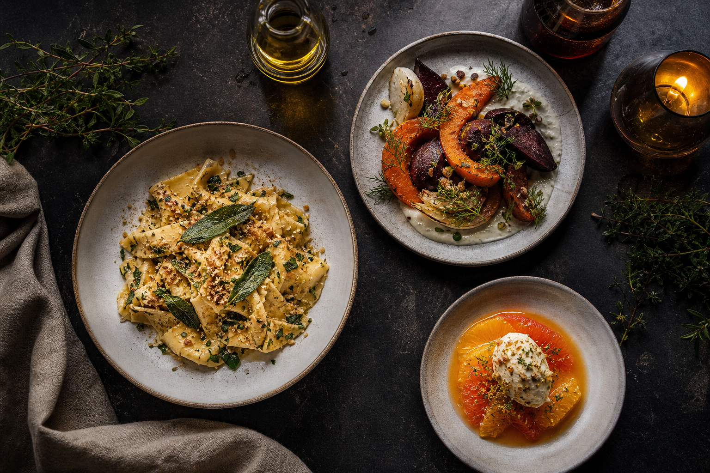
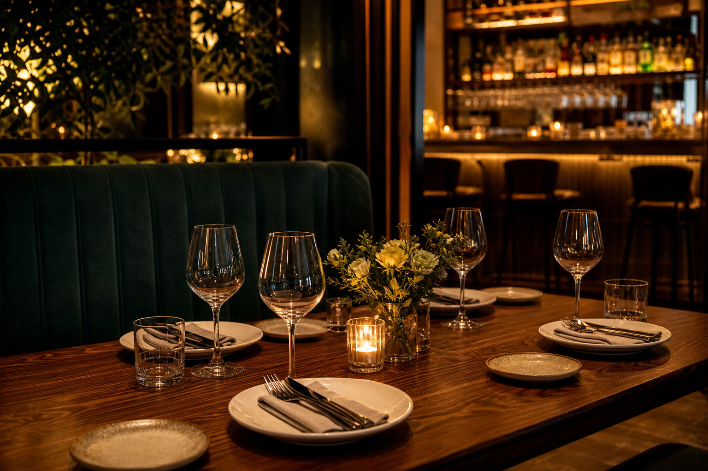

Charred Carrot Agnolotti
Brown butter, fennel pollen, pickled golden raisin.
$18
Seasonal dining in the city
Fire-kissed vegetables, handmade pasta, and quiet hospitality from a kitchen that changes with the market.

Kitchen notes
Our menu starts with whatever arrives brightest that morning: herbs still cool from the farm box, fish from small boats, and vegetables that deserve the center of the plate.
Reservations
Choose the dining room for a slow evening, the counter for the kitchen's pulse, or the booth for a little privacy.

Find us
Downtown, two blocks from the theater. Walk-ins are welcome at the bar when seats open.